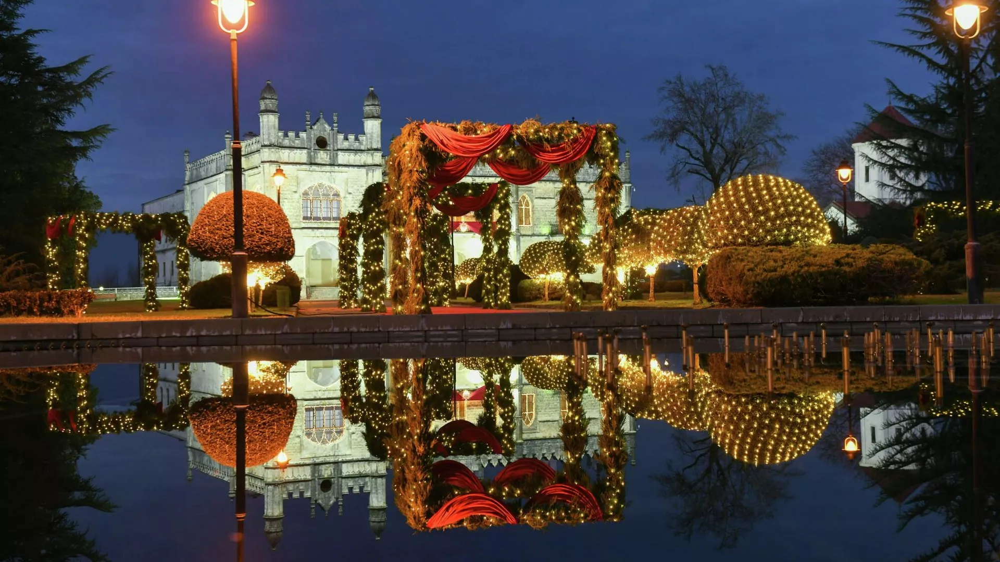
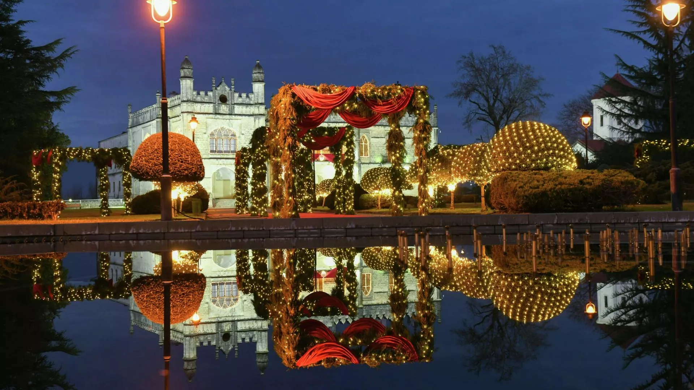

ღონისძების დეტალები
თარიღი: 31 დეკემბერი, 2024წ.
ლოკაცია:ზუგდიდი, მოედანი
აქტივობები
- საახალწლო მაღაზია
- სიმღერა
- სანტა
- საახალწლო food ფესტივალი
დადიანების სასახლე
დადიანების სასახლე ზუგდიდში მდებარე ისტორიული ძეგლია, რომელიც XIX
საუკუნეში აშენდა.
იგი მოიცავს საცხოვრებელ სასახლეს, ბაღს და მუზეუმს, რომლის მორთვაც
უმნიშვნელოვანესია
საახალწლოდ ზუგდიდში. სასახლეში დაცულია უნიკალური ექსპონატები, მათ
შორის ნაპოლეონ
ბონაპარტის ნივთები. დღეს იგი სამეგრელოს კულტურული მემკვიდრეობის
მნიშვნელოვან ნაწილს
წარმოადგენს და ტურისტებისთვის პოპულარული ადგილია. ყოველ ახალ წელს დიდი
შემართებით
გეგმავენ სამეჯლისო ცეკვებს მთელი ზუგდიდისათვის
გალერია


 

საკონტაქტო
შეკითხვებისთვის მიმართეთ აქ
მეილი: info@zugdidi.gov.ge
ტელეფონი:599 75 45 34